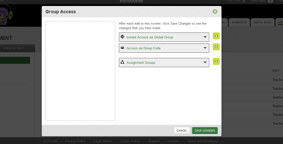

Teacher - Getting Started
If you have purchased one of our courses or been invited as a Teacher on the Kerboodle website and would like to know how to get started, then this is the page for you.
There are lots of interesting features to explore but we want to ensure that the basics are covered so that you are able to get yourself and other teachers using the website as quickly as possible.
Receiving the invite
Whether you have purchased a course or been invited by another teacher, you should have received an email from our no-reply@kerboodle.com email address. This email will contain an activation link which you will have to click on to confirm your status as a Teacher on the platform. If you don’t think you have received the email from us then please check your junk mail folder first before contacting us.
Logging in
When you log into the Kerboodle website the first page you see is your homepage – the courses you have access to will be shown in tiles in the centre of your screen. Click on a course tile to gain access to all the content.
Setting up the administrator
If you are the purchaser of the course then your account will be set up as a Teacher account. If you are one of the first teachers to access the Kerboodle platform then it will be your job to invite other teachers and most importantly to invite the Administrator.
Once you have selected a course on the homepage please click on the User Management tab.
If the Administrator hasn’t already been invited then you will see the message below. If you do not receive this prompt, or you can see that there are already some students in the User Management module, then your institution already has an Administrator.
Your Administrator should be someone who is familiar with your School Management System, so that they can easily export student data and create student logins for your online products. Multiple departments using different courses can all purchase access to products at https://kerboodle.oxfordsecondary.co.uk. Having one administrative user ensures that each student and teacher only has one set of login details to get to all of their courses. The Administrator does not have access to the content of courses - their only responsibility is creating user accounts and global groups (groups that exist across the whole institution).
Although we don’t recommend this, if you want to be a Teacher and the Administrator then you will have to register the two accounts under two different email addresses.
You can choose to ignore the Invite an Administrator message if you don’t want to make that decision straight away and still invite other teachers (see below) to use the platform by clicking the cross in the top right hand corner. You will be prompted to invite an Administrator every time you click on the User Management tab until the Administrator has been invited.
Inviting other teachers
Teachers can invite other teachers to kerboodle without setting up the Administrator or whilst they wait for the Administrator to accept the invitation. In the User Management tab click on the Invite more teachers button.
Fill in the the teacher’s details, double checking the email address of the teacher before sending the invite. The teacher will receive an invite via email and will have to click on the activation link within the email to activate their account.
The Invite more teachers button will disappear from the Teacher’s User Management tab when an Administrator has accepted the invitation
Creating students
Only the Administrator can create students. We have a getting started guide for the Administrator which explains how best to set up your institution.
Giving students access to a course
After the Administrator has accepted the invitation and created the students for your institution, you will need to give your students to your course. Make sure you are in the correct course and then select the User Management tab.
There are two methods to give access to each course: via Global Groups or via Group Codes. Click on Group Access and then click on the green ‘i’ icons for more information about these two methods.
If you have chosen the Global Group method, adding the groups automatically gives students access to the course and all of its features. If you have chosen the Group Code method, students will need to enter the code generated on their homepage before the course will become available to them.
Exploring the features
Spend time familiarising yourself with your Kerboodle platform, exploring the different tabs within the course. If you need any help, click Help at the top right of your screen or browse the other sections of this website now.
Teachers FAQs
Please visit our dedicated Teacher support pages for further information.
Need technical advice?
For help with browsers and other technical queries, please visit our dedicated technical support pages.

© 2013 Oxford University Press. All rights reserved | Privacy Policy | Legal Notice